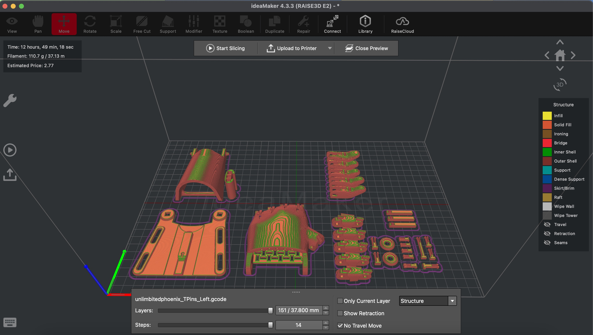
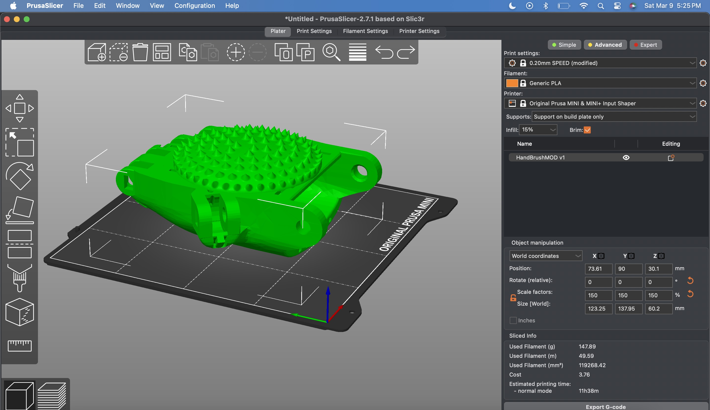
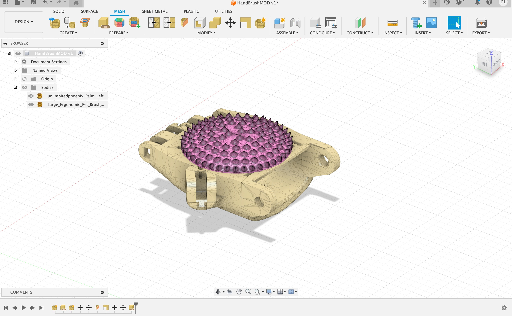

Goals: The problem we are aiming to solve is preventing the kinking and tangling of the tubes associated with an ostomy bag. Kinking and tangling of the tubing connecting the ostomy bag to its night drainage container, causes a backup of can result in nausea and vomiting in the patient dependent on the device. Usually individuals who need an ostomy bag carry a “pouch” throughout the day to help with the process. However, our focus is on the night drainage container, where the individual does not need to worry about the tangling of the tube. According to NIH, 725,000 to 1 million people are affected who need to use an ostomy bag.
Ostomy Night Bag
Defining the Problem


Summarizing the Project
It was fun to have a project with a new partner, and to work on constructing our first hand. The most difficult aspect of this project was having to deal with the long wait time of the printer, but both of our prints worked out fine. Assembly was straightfoward and alot like building sophisticated legos which was fun. In the end, we were both happy with our build, and I cant wait to find more projects to tinker with.
How does the science work behind existing solutions?
Existing solutions and designs are focused on preventing leakage from the ostomy port itself by improving on the port and not preventing tangling in the tubing between the pouch and night drainage container. For example: Ostomy cure focuses on making long-term solutions to ostomy problems centered on the leakage around the stoma where the pouch connects to the body but neglects the issue of the Discharge tube tangling and becoming obstructed.
Define Customer Profile for who experience this problem - Who are they? What do they do over the course of the day? Where will you find them?
The customer profile of a person who experiences this sort of problem is a person who has undergone an ileostomy. An ileostomy is usually done when your large bowel (colon) needs to be removed or rested after treatment or surgery. An ileostomy might be needed because of: traumatic injury to the colon or malignant growths. Over the course of their day, the process of having to use an ostomy bag is the cleaning, changing, and challenge of carrying it everywhere they go. There might be some mobility and comfort issues, since there is a bag attached to them, but they live their day to day lives.
Hand Assembly
Fabricate 2-10 open-source hardware solutions. This is your chance to see what already exists and take the best features for existing designs and integrate them into your R&D for product development. What are some Key Features? What does Success Look Like?
We believed that for hardware solutions, the best option for our build was to focus on Long Hooks with Velcor Strap Design
What are some Key Features? What does Success Look Like?
Our Key Features are:
Velcro points that are easy and reliable access for opening and closing. We also want to add in Brackets that allow for easy attachments and extra supports for stabilty on the user.
For our group,Success is a bit more difficult since we are not working directly with someone who uses an ostomy bag, but by trying out how well our product hangs on to us individually, and with movement, adjustments and reconfigurations will continue to be added. Success is determined by how well our product holds up and if we really need to make any adjustments.
Remixing the Hand

The remix that I had in mind was to make it easier to brush our pets. The inspiration came for my cat back home, who sheds too much and somehow there is never a brush in sight. I looked into Thingsverse and found this brush that initially had a handle on it, cut it to only have the part I wanted, and fitted it onto the palm of the hand to what I wanted it to be. For this, It was quite simple to do. The idea was to take the brush, initially with a handle, to cut that part off and elongage the edges to then combine it with the palm of the hand using Fusion360.I scaled the brush to better fit the hand, and from that point made minor adjsutments to send it over to Prusa to slice!